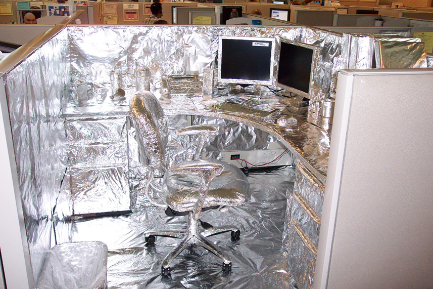
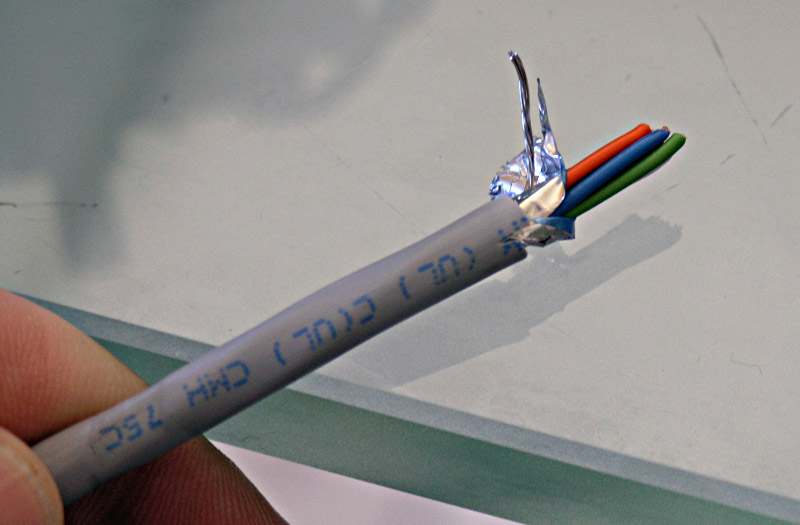
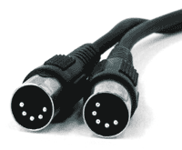
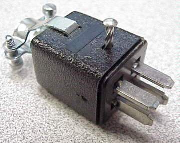
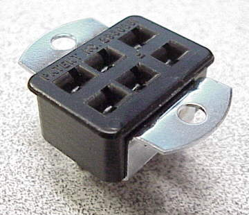

CNC Machine Noise Cures
After backlash, the second
biggest source of frustration seems to be noise problems on home brew CNC
systems. Noise can manifest itself in a variety of ways including uncommanded
movements, servo encoder problems, and limit switches tripping unexpectedly.
There are many noise sources, but motors and VFD's appear to be the worst.
Any source of electrical sparks or arcing is going to make noise. In fact,
the first radio transmissions were nothing more than great big sparks!
Noise suppression is often a matter of surrounding the
noise producers and/or the noise victims with a grounded metal shield.
With enough foil and grounding, you can shield anything from noise:

With enough foil and grounding,
you can shield anything from noise!
Fortunately, there are easier ways,
so put away your aluminum foil and read on. Below
is a laundry list of tips I've come across that you can consider and
try if you think you're having a noise problem.
Important
Preventative Tips
These are the things you should
always do as you're building the system to avoid having to deal with noise
later on. They're either mandatory or so cheap and easy you may as well
do them anyway.
Use an Opto-Isolated Breakout Board
Your CNC electronics and your PC are each a source of noise as well
as being vulnerable to noise from the other. Putting each into its own
grounded chassis will help keep them isolated and the opto-isolators help keep them isolated.
Use Shielded
or Twisted Pair Cables
Shielded cabling
for the stepper/servo motor wiring, encoder wiring, and limit switch wiring
is ideal for noise resistance.
I bought a 500'
spool of 6 conductor shield 22 AWG cable from Action Electronics (No longer in business, unfortunately).
For connectors, I'm using some microphone
connectors, also from Action Electronics:

6 conductors and a foil shield: this is the
right cable for my step motors!
For others who
may read this, you want to use shielded cables or noise will make your
system unreliable. FWIW, when I first got my limited switches going, I did not ground the cable shields to the CNC cabinet. As a result, I had a bogus limit fire about every 2 to 3 minutes. Grounding the shields made that go away completely. If you didn't think you had noise in your system, maybe it was because you didn't have a way to check?
Other thoughts:
-
You can use CAT-5
cable for encoders or limit switches, just be sure you use the twisted
pair feature and pair each signal with it's ground to provide noise immunity.
Apparently this idea has been blessed by none other than Mariss F., Mr
Gecko, himself.
-
DIN cables such as are used as MIDI patch cables in the music business
and older keyboard cables (before the PS/2 and USB styles) in the PC business
are another possibility. Even Radio Shack carries some DIN cable componentry.
DIN for MIDI applications have 5 conductors plus a ground/shield and are
supposed to be rated to 2 amps @ 100V. What's nice is you can get premade
DIN cables in a variety of colors and lengths. If they'll serve the power
needs of your system, they could be quite convenient. Mini-DIN is the
PS/2 keyboard connector, and is also shielded. It might be useful for
limits and encoders. Cables are available already made up. Note
that Homann
sells a mini-DIN breakout board that would make it easy to connect to
your mini-DIN cables with point to point wiring.

MIDI DIN patch cable...
- Cinch connectors are another common type of connector used for motors. They
will carry a bit more current than DINs or microphone connectors.


Cinch connectors...
Higher Voltage Control Signals Have Better
Noise Immunity
3-5V DC is pretty marginal from a noise immunity
standpoint. If you can run 12V or more to your limit switches you will
find it is much less susceptible to noise. Unfortunately, this may be
difficult to change as your breakout board
will likely have made the voltage decision for you. My GRex uses 12V.
Sometimes you can use a Zener diode to run
a higher voltage and convert it back to 5V for your breakout board. Run
a 24V circuit and have the switch ground that. Then use a resistor in
series something like 1K to the digital input, with a 5V1 zener diode
across the input and ground. (Bar of diode to input). The Zener diode
will clamp the digital voltage at 5volts.
There are also opto-isolators that allow
differential voltages so you could have +5V to your breakout (actually
may as well go to the parallel if you are using an opto-isolator--don't
need 2 of them!) and 24V to your switch circuits.
Higher Current Helps Too!
If you can not up the voltage try putting
some 100 ohm pull up resistors to +5 on the switch, this will give you
50 milliamps of current through the switch and may help increase reliability. This is .250 watts so get ½
watt resistors or they will get warm.
Wire Home and Limit Circuits Normally
Closed
Noise spikes are usually positive, so a normally
open circuit can see a noise spike as circuit closure. Wire the circuits
normally closed and they're less susceptible. Most of the time normally
closed is a good idea from a reliability standpoint too as any damage
to the circuit usually opens it and trips the circuit.
Keep "Noisy" Wires Aways from
"Quiet" Wires
For example, don't run the limit wiring in
the same conduit as the cable from VFD to motor! When noisy wires must
be near quiet wires, try to cross them at right angles rather than running
them parallel. Parallel wires are good at passing noise to each other.
Separate Chassis for PC, Driver Electronics,
and VFD
Put each of these components into its own
chassis (don't just stick your VFD in a box next to a bare PC motherboard,
next to a bare breakout board, next to bare servo drives), and then run
a common ground to each chassis.
VFD Noise
If you were asked to produce a noise generator
in order to sabotage a CNC or other sensitive electronic system, you couldn't
ask for a more efficient one than a VFD!
A grounded flexible metal conduit is very
desirable with the VFD connection to the motor. T&B SuperFlex also
has a small copper wire wound with the metallic sheath for ground continuity.
Use of twisted conductors inside the flex conduit will also help reduce
the noise emissions from the VFD.
Keep the wiring length from VFD to motor
as short as possible. Long lines can radiate more noise.
VFD manufacturers like Hitachi sell special
filters called EMI, RFI, or EMC filters that cut out noise. They're installed
on the AC mains side of the VFD. They also sell line reactors that go
on the line between the VFD and the motor. A line reactor reduces noise
by cutting out harmonics, and it will also increase the performance of
the system since power is being lost through the harmonics. Outfits like
AutomationDirect
sell them, but they aren't cheap so I wouldn't necessarily add one unless
you were running out of noise reduction steps to try.
Avoid Ground Loops
If you're familiar with ground loops and
their impact on stereos and hi-fi equipment, you know they are a source
of noise. Ground loops occur when all grounds are not quite a the same
zero potential. The best way to avoid them is to use a common ground for
all equipment. The exception to this rule is when using a plasma cutter
you will want to keep the grounds for the plasma cutter separate from
the rest of the equipment all the way back to the mains box if possible.
Diagnosis and Even More Noise Tips


Be sure to check out G-Wizard, our Machinist's Software!